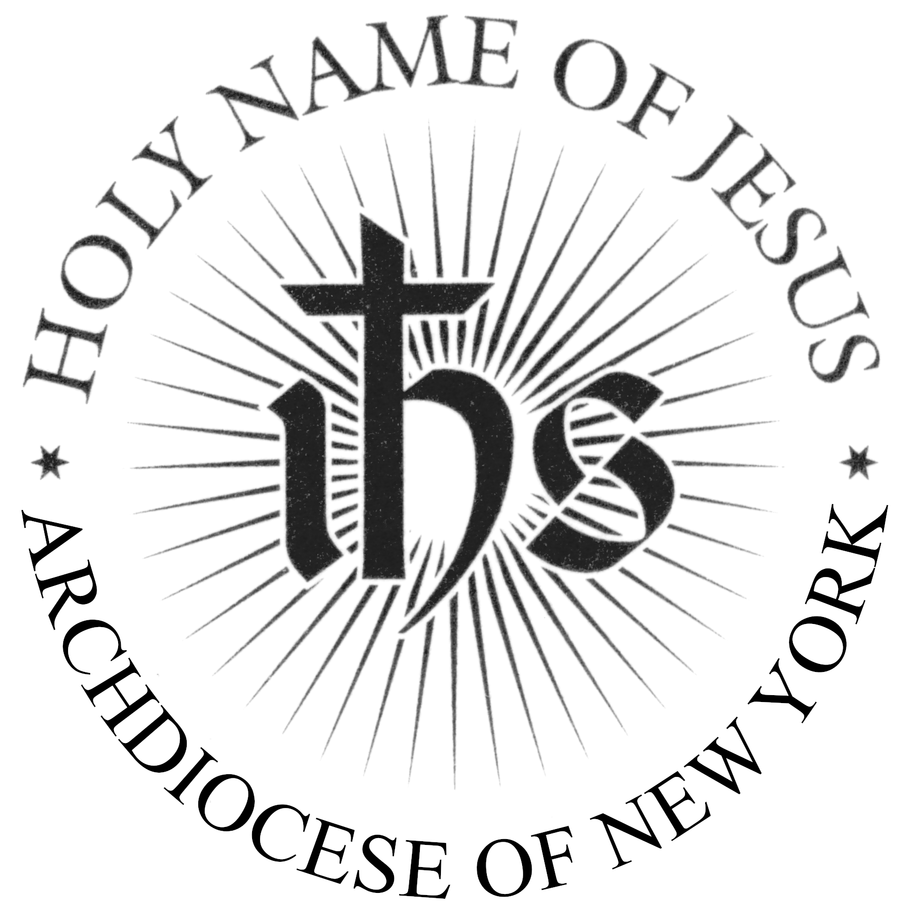
Pentecost Sunday
6 PM Mass
Prelude "Come, Holy Spirit, Lord God" Dieterich Buxtehude (1637-1707)
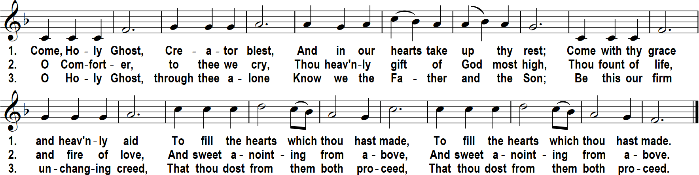
The Spirit of the Lord has filled the whole world,
alleluia;
and that which contains all things,
knows every language spoken by men,
alleluia, alleluia, alleluia.
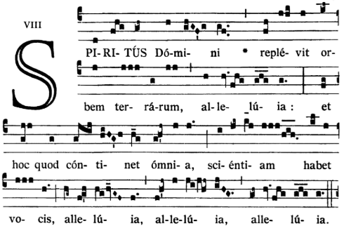
I confess to almighty God and to you, my brothers and sisters, that I have greatly sinned,
in my thoughts and in my words, in what I have done and in what I have failed to do,
through my fault, through my fault, through my most grievous fault;
therefore I ask blessed Mary ever-Virgin, all the Angels and Saints, and you, my brothers and sisters, to pray for me to the Lord our God.
When the time for Pentecost was fulfilled,
they were all in one place together.
And suddenly there came from the sky
a noise like a strong driving wind,
and it filled the entire house in which they were.
Then there appeared to them tongues as of fire,
which parted and came to rest on each one of them.
And they were all filled with the Holy Spirit
and began to speak in different tongues,
as the Spirit enabled them to proclaim.
Now there were devout Jews from every nation under heaven
staying in Jerusalem.
At this sound, they gathered in a large crowd,
but they were confused
because each one heard them speaking in his own language.
They were astounded, and in amazement they asked,
"Are not all these people who are speaking Galileans?
Then how does each of us hear them in his native language?
We are Parthians, Medes, and Elamites,
inhabitants of Mesopotamia, Judea and Cappadocia,
Pontus and Asia, Phrygia and Pamphylia,
Egypt and the districts of Libya near Cyrene,
as well as travelers from Rome,
both Jews and converts to Judaism, Cretans and Arabs,
yet we hear them speaking in our own tongues
of the mighty acts of God."
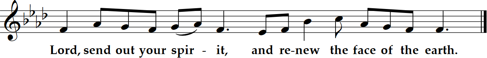
Brothers and sisters:
No one can say, "Jesus is Lord," except by the Holy Spirit.
There are different kinds of spiritual gifts but the same Spirit;
there are different forms of service but the same Lord;
there are different workings but the same God
and we were all given to drink of one Spirit.
who produces all of them
in everyone.
To each individual the manifestation of the Spirit
is given for some benefit.
As a body is one though it has many parts,
and all the parts of the body, though many, are one body,
so also Christ.
For in one Spirit we were all baptized into one body,
whether Jews or Greeks, slaves or free persons,
and we were all given to drink of one Spirit.
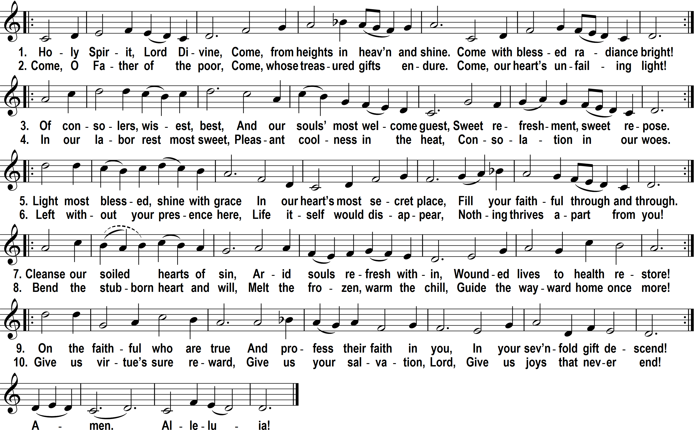
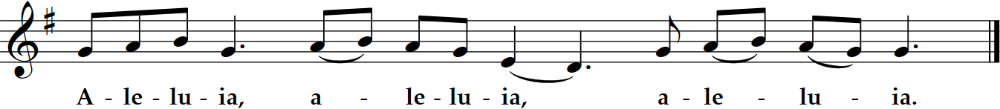
On the evening of that first day of the week,
when the doors were locked, where the disciples were,
for fear of the Jews,
Jesus came and stood in their midst
and said to them, "Peace be with you."
When he had said this, he showed them his hands and his side.
The disciples rejoiced when they saw the Lord.
Jesus said to them again, "Peace be with you.
As the Father has sent me, so I send you."
And when he had said this, he breathed
on them and said to them,
"Receive the Holy Spirit.
Whose sins you forgive are forgiven them,
and whose sins you retain are retained."
Homily + Profession of Faith
I believe in one God, the Father almighty,
maker of heaven and earth,
of all things visible and invisible.
I believe in one Lord Jesus Christ,
the Only Begotten Son of God,
born of the Father before all ages.
God from God, Light from Light, true God from true God,
begotten, not made, consubstantial with the Father;
through him all things were made.
For us men and for our salvation he came down from heaven,
and by the Holy Spirit was incarnate of the Virgin Mary,
and became man.
For our sake he was crucified under Pontius Pilate,
he suffered death and was buried,
and rose again on the third day
in accordance with the Scriptures.
He ascended into heaven
and is seated at the right hand of the Father.
He will come again in glory to judge the living and the dead
and his kingdom will have no end.
I believe in the Holy Spirit, the Lord, the giver of life,
who proceeds from the Father and the Son,
who with the Father and the Son is adored and glorified,
who has spoken through the prophets.
I believe in one, holy, catholic and apostolic Church.
I confess one Baptism for the forgiveness of sins
and I look forward to the resurrection of the dead
and the life of the world to come. Amen.
Prayer of the Faithful + Offertory + Liturgy of the Eucharist
“Confirm this, O God, which you have wrought in us; from your temple which is in Jerusalem, Kings shall offer you gifts. Alleluia.”
May the Lord accept the sacrifice at your hands, for the praise and glory of his name, for our good, and the good of all his holy Church.
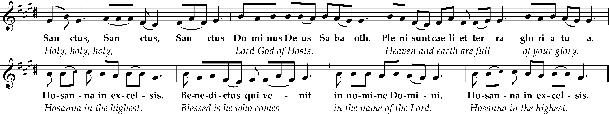

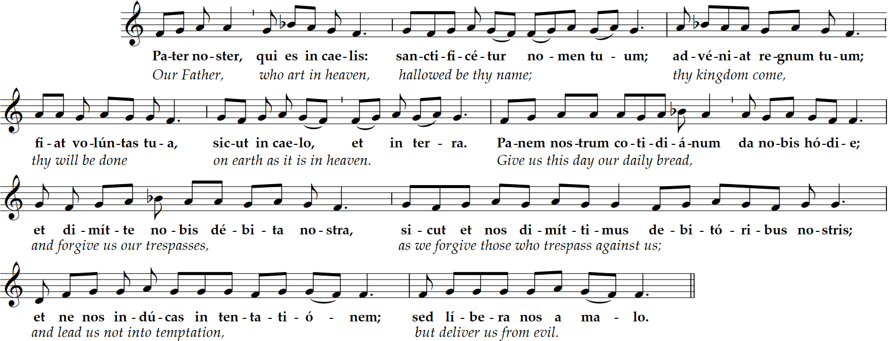
Deliver us Lord from every evil, graciously grant peace in our day, that by the help of your mercy we may be always free from sin
and safe from all distress, as we await the blessed hope, and the coming of our Savior, Jesus Christ.

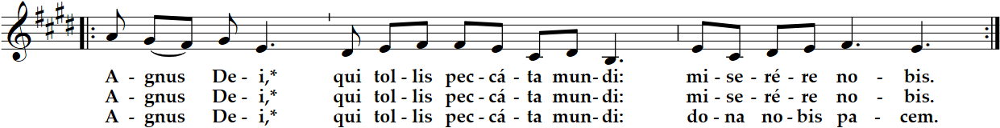
Lord, I am not worthy that you should enter under my roof, but only say the word and my soul shall be healed.
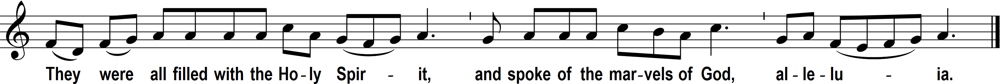
1. Sing to God, praise his name;
exalt the rider of the clouds.
Rejoice before him
whose name is the LORD.
Father of the fatherless,
defender of widows
God in his holy abode.
2. God, when you went forth
before your people,
when you marched through the desert,
The earth quaked, the heavens poured,
before God, the One of Sinai,
before God, the God of Israel.
3. Summon again, O God, your power,
the divine power you once showed for us,
Awesome is God in his holy place,
the God of Israel,
who gives power and strength to his people.
Blessed be God!
Queen of heaven, rejoice, alleluia. The Son you merited to bear, alleluia, has risen as he said, alleluia. Pray to God for us, alleluia
"St. Michael the Archangel, defend us in battle. Be our protection against the wickedness and snares of the devil.
May God rebuke him, we humbly pray; and do thou, O Prince of the heavenly hosts, by the power of God,
cast into hell Satan and all the evil spirits who prowl about the world seeking the ruin of souls. Amen."
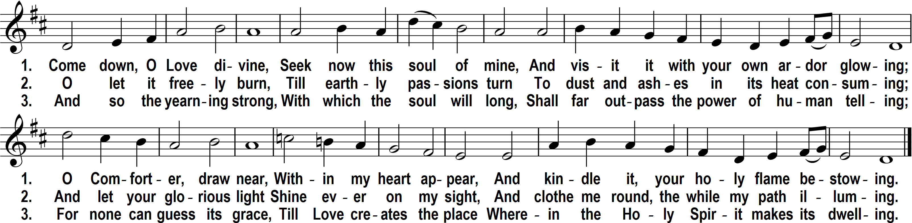
Postlude - "Jig Fugue" Dieterich Buxtehude (1637-1707)